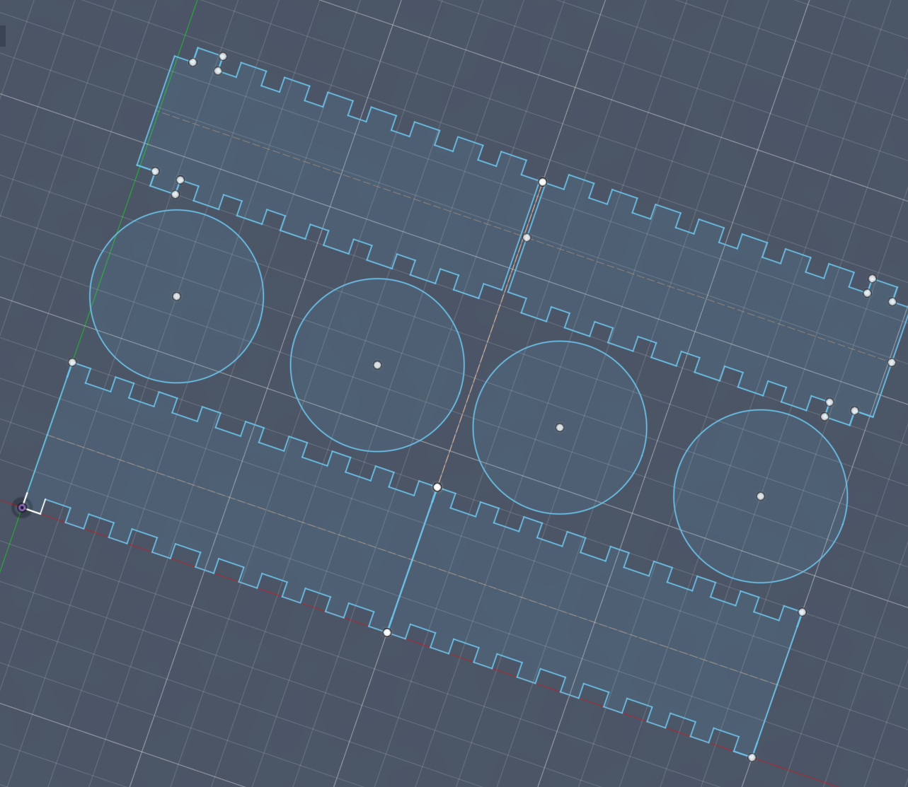
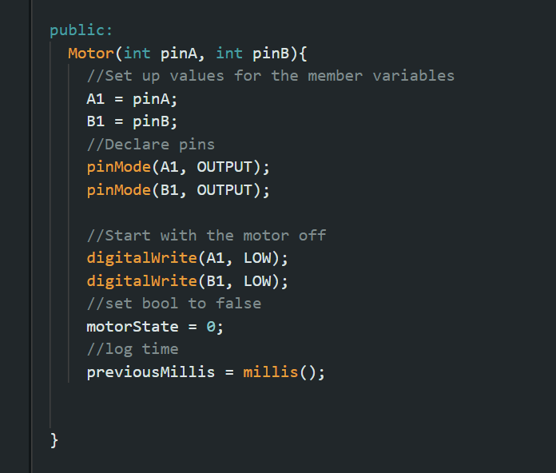
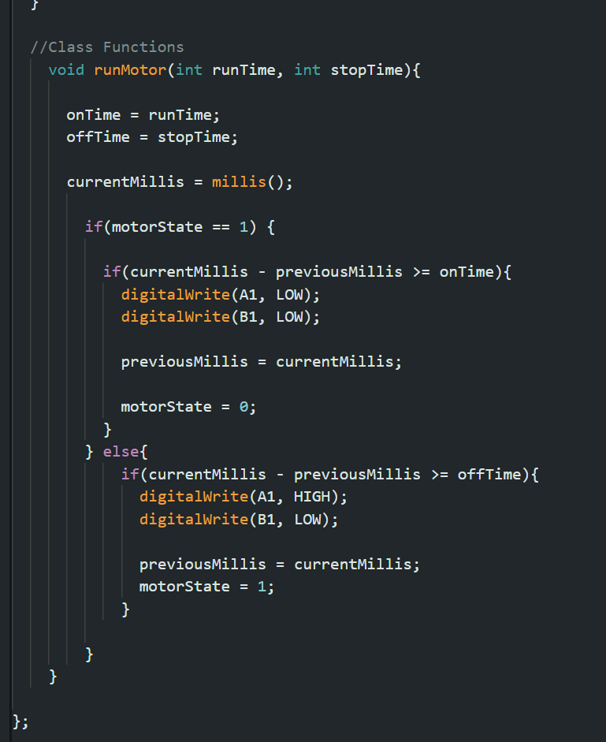
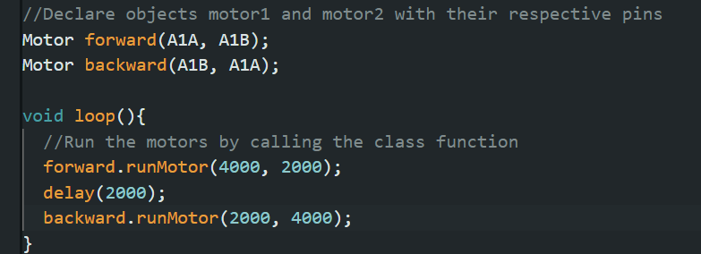
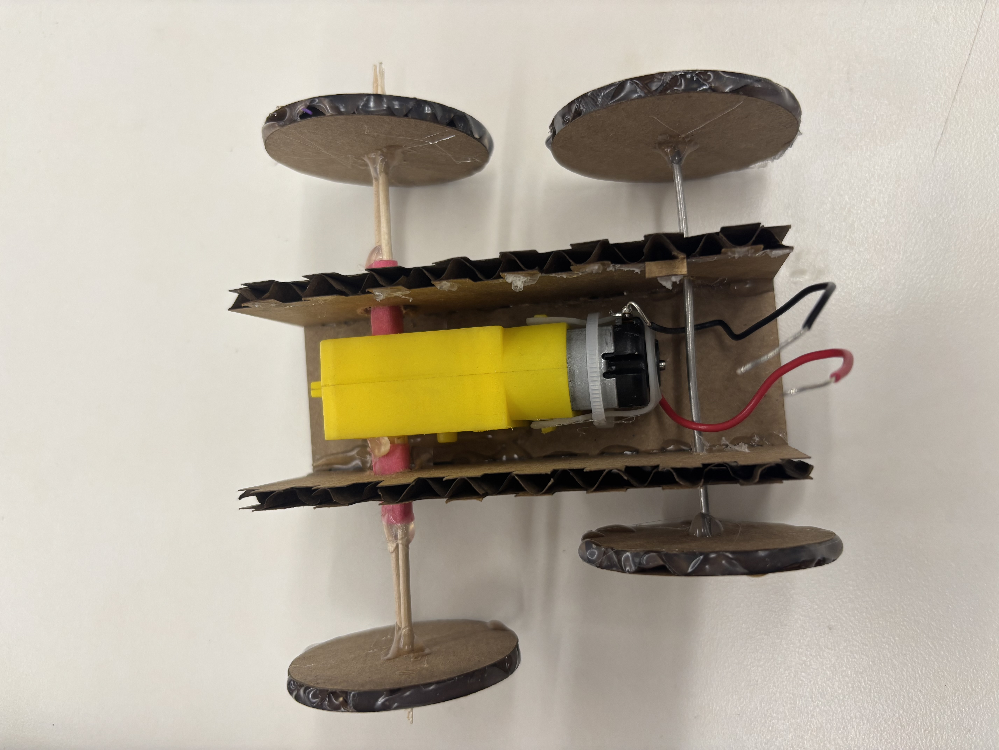
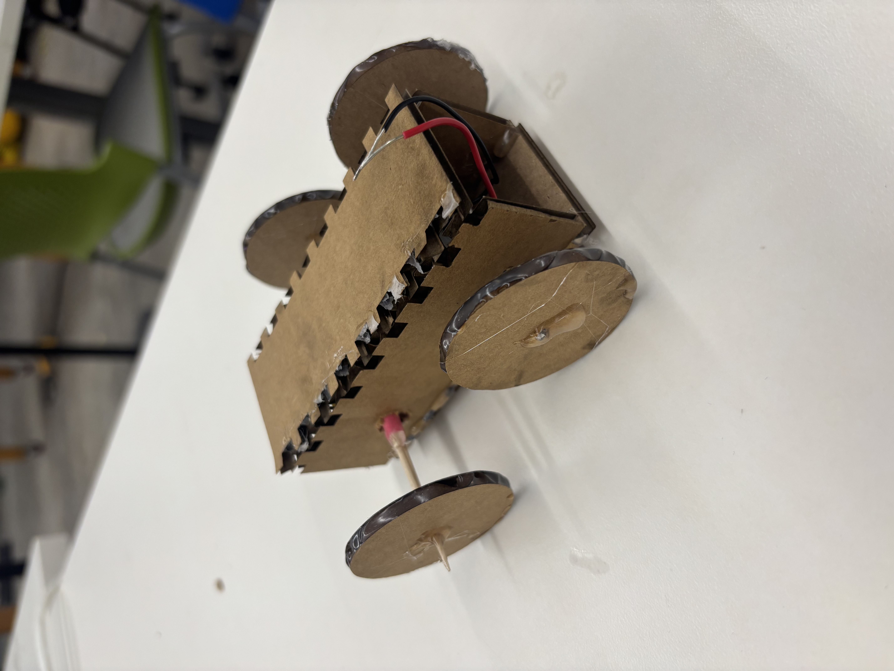

<div class="textcontainer">
<p class="margin"> </p>
<h3>Week 4: Microcontroller Programming</h3>
<h4>[Do Something with an arduino]</h4>
For this week, I wanted to be able to make a motor go forwards and backwords.
Instead of iterating my last weeks project, I chose to make a little car.
I started with a basic box with no front or back to surround my yellow motor.
<p></p>
</div>
I decided to poke holes in it with a drill bit after cutting because I just needed the holes to be bigger than the axel of the car.
After I tested the dimensions and poked the holes, I started testing the code. I based my code off of what we did in lab.
However, instead of using 2 motors, I used the same motor to have a forward and backward mode.
<p></p>
<p></p>
<p></p>
</div>
I assembeled everything and the main issue I had was that there was not enough traction for the car to go forward.
The cardboard was slipping all over the table. To fix this, I put hot glue around the circumference of the wheels.
Here you can see the completed car.
<p></p>
<p></p>
</div>
I'm very happy with how well this little project turned out. The coding wasn't even that bad either.
<video width="320" height="240" controls>
<source src="lilcarvid.mov" type="video/mp4">
Car moving.
</video>
</div>